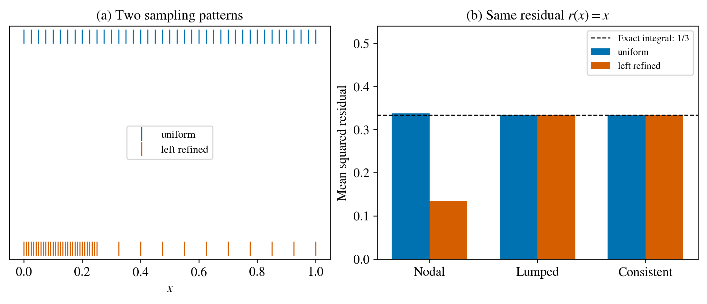

From measurements to a loss¶
Separate the state from the measurement¶
The solver computes displacement \(\mathbf u\), damage \(d\) and history variables. A camera or displacement sensor observes a function of this state. Write \(\widehat{\mathbf y}=\mathcal H(\mathbf u,d)\), where \(\mathcal H\) is the observation operator, and define the residual \(\mathbf r=\widehat{\mathbf y}-\mathbf y^{\mathrm{obs}}\).
For nodal synthetic damage, \(\mathcal H\) simply selects the required nodes and times. For a registered displacement measurement at point \(\mathbf x_p\) inside a triangle, use the shape functions:
The containing element and interpolation weights belong to the observation setup. Points outside the specimen and invalid measurements require masks. A segmented crack image is not automatically a measured nodal damage field. Its comparison requires a declared image/phase-field observation model.
For a triangle with vertices \((0,0),(1,0),(0,1)\), the shape functions are \(N_1=1-x-y\), \(N_2=x\), \(N_3=y\). A measurement at \((0.25,0.25)\) therefore uses weights \((0.5,0.25,0.25)\). If one displacement component at the vertices is \((0,2,4)\), its predicted value at that measurement is \(1.5\) in the same displacement units. The weights sum to one and reproduce a constant field. On a general triangle, solve for the barycentric weights using its vertex coordinates. Register camera pixels to physical specimen coordinates first.
Nodal averages and spatial integrals¶
The nodal mean square is \(J_{\mathrm{node}}=N^{-1}\sum_i r_i^2\). An area-normalised field error is
These have the same units but different spatial weighting. Adding nodes to one part of the plate changes its contribution to the nodal mean. A spatial integral weights physical area.
For linear interpolation on a triangle of area \(A_e\), the consistent mass matrix is
A lumped approximation assigns \(A_e/3\) to each vertex. It is convenient, but it is not the same integral of the squared linear interpolant.
{kind=link}

Figure 4 The same residual \(r(x)=x\) sampled on two one-dimensional meshes. The exact integral is \(1/3\). Refining the left region changes the nodal average; the consistent finite-element integral remains exact for this example.¶
Neither choice is universally preferable. Equally reliable independent nodal measurements can justify equal measurement weights. A continuum field norm asks a different question. State the intended measure before selecting the formula.
Combining displacement and damage¶
Damage is dimensionless; displacement has units of length. Adding their raw squares makes the objective depend on the displacement unit. One option is
Here \(s_d\) and \(s_u\) are declared scales; \(W\) contains observation or spatial weights. Noise-based weighting is appropriate when a defensible noise model is available. A dimensionless objective can still have unbalanced parameter gradients. Inspect both term values and \(\nabla_\theta J_d\), \(\nabla_\theta J_u\).
Keep fitting data separate from final assessment data. Define normalisation using the fitting set or fixed physical scales, so the final assessment does not influence the optimisation through preprocessing.
Exercise 1: calculate the mesh effect¶
Take \(r(x)=x\) on \([0,1]\). Compute \(\int_0^1r^2dx\). Predict whether adding many samples near \(x=0\) increases or decreases the nodal mean.
Worked solution
The integral is \([x^3/3]_0^1=1/3\). Additional samples near zero decrease the unweighted mean because more small residuals receive equal weight. The underlying residual field has not improved.
Exercise 2: choose the right claim¶
A retained recovered field has a smaller area-weighted error than its nodal error. Has a new, better inverse recovery been obtained?
Worked solution
The recovered field is unchanged. We have evaluated it with a different measure. A new optimisation would be needed to study whether minimising that measure produces a different recovery. Preserve both results and their definitions.
Exercise 3: units and assessment¶
Convert displacement from metres to millimetres. How should \(s_u\) change? Why should it not be estimated from final-assessment observations?
Worked solution
Multiply both the residual and \(s_u\) by 1000; their ratio is unchanged. Using final-assessment observations to set the scale makes them influence the fitting objective. The separation between fitting and assessment is then weaker than the description suggests.
Handling uncertain measurements¶
For a scalar displacement residual \(r_p\), a robust alternative is the Huber penalty
Use \(\sum_p m_p w_p\rho_\delta(r_p)/\sum_p m_p w_p\), with nonnegative confidence weights \(w_p\) and validity masks \(m_p\). A positive denominator is required. The derivative equals \(r\) inside the quadratic region and \(\delta\,\mathrm{sign}(r)\) outside it: large residuals have bounded influence, rather than being automatically discarded. For displacement vectors, state whether the penalty acts on components or on the vector norm. This is an observation-model option; the executed quadrature example uses the squared residual and makes no noise-robustness claim.